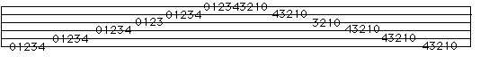

Single Finger Practice.
Classical guitar technique is so zealous in its insistence on alternating the fingers that there is almost a certain abhorrence to playing repeatedly with one finger.
While alternation is a keystone of certain techniques, there are other instances where repeating a finger is more appropriate and effective. The thumb, for example, is a complete plectrum in itself, and as you know there are many great guitarists who do everything that they do with a pick. Even the fingers sometimes bear repetition, for consistency of tone, for example.
Regardless, practicing with the fingers individually is one of the most effective ways of strengthening your whole right hand technique. Master the basics. Constantly practice fundamentals. What could be more fundamental then one finger playing one string?
The basic unit to practice is the chromatic scale:

1 - Play the whole scale once with the thumb, rest stroke. Immediately play the scale again, this time with the thumb, free stroke. Keep repeating the scale, alternating between rest stroke and free stroke.
2 - The same, with "i", "m", and "a" fingers, rest stroke and free stroke alternately.
There! Wasn't that easy? Its probably the single best thing you can do for your right hand technique. Be sure to keep repeating each finger until it tires before moving on to the next. No fatigue - no gain. (Lets leave the pain out of it!)
A note on preparation:
Playing a note is only half the battle. The finger must get back and find the string again (or another string) before the next note can be played. In order to play efficiently, it must get back quickly and not waste time with excess motion. The way to practice this is to play a note and quickly return the finger to the string, stopping the vibration. The finger is now motionless on the string, ready to play the next note. The finger touches the string in the exact spot (on the finger) for optimum tone production on the next note.
Another way to look at it is "touch the string before you play it". The "touching" brings finding the string into your consciousness. In actual playing, the "touching before playing" is either just what it says (if you want to cut off the previous sounds) or really happens simultaneously, in legato execution.
The effect may be described as "staccato" if the successive notes are on the same string, and in fact this is one way a staccato passage in a piece of music would be executed (the other way is by releasing the left hand finger while the note was still ringing).
If the notes are on different strings, the preparing finger will not stop the sound of the just-played note, so there will be no staccato effect. This is especially true in arpeggio, but also occurs in scales on a string change. So, playing the chromatic scale, the first 0 note is cut off by the finger preparing for 1. 1 is cut off by the finger preparing for 2. 2 is cut off by the finger preparing for 3. 3 is cut off by the finger preparing for 4. 4 keeps ringing until the left hand finger is lifted, because the finger has prepared to play 0 on the next string, and does not cut off the sound of 4.
More on preparation as it relates to alternating fingerings and arpeggio are in the appropriate sections.